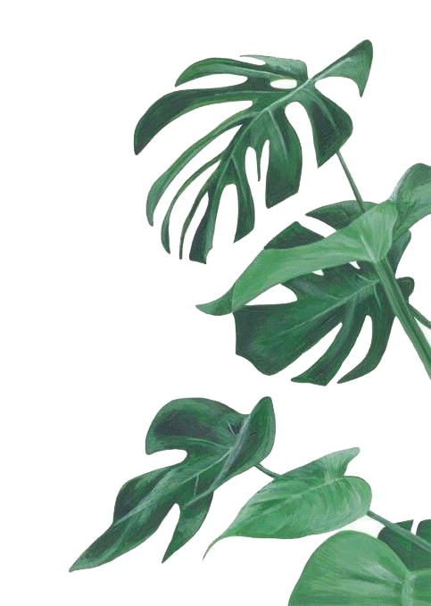
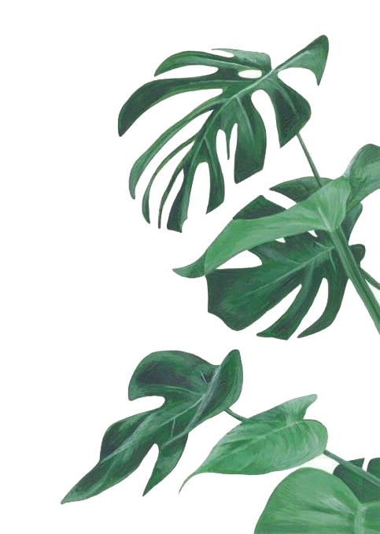

Island

Parallax is a common word in astronomy, referring to the apparent shift in the position of an object when we view it from different positions. Objects in the foreground appear faster and more energetic than those in the background.
Because of parallax, humans perceive objects in front as three-dimensional. But how does parallax impact user experience (UX) design?
Aesthetics, usability, and hedonic qualities are critical for UX design.
A good user experience may lead to happiness, pleasure, pride, and enjoyment. Parallax can improve your emotions when interacting with a product or technology. Designers also use parallax to make the design seem like real life.
We can trace parallax’s use back to the early 1980s when designers used it in video games, particularly side-scrolling arcade games. It enhanced storytelling and added depth and dynamics to the scene. The aim was to offer gamers an immersive, more engaging experience.
In the early 2010s, parallax became popular in web design.

 
